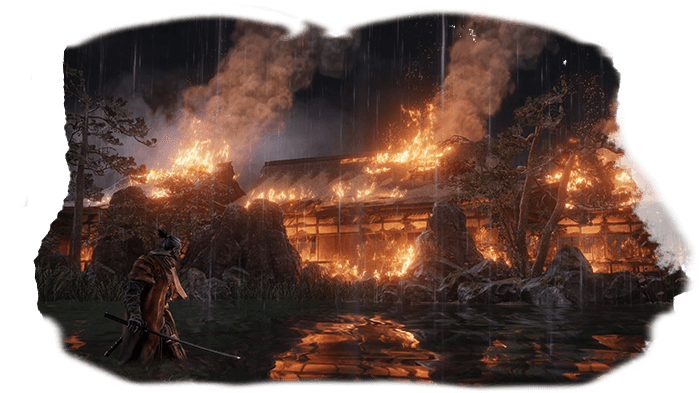

Summary
Sekiro: Shadows Die Twice is a 2019 action-adventure game developed by FromSoftware and published by Activision. The game follows a shinobi known as Wolf as he attempts to take revenge on a samurai clan who attacked him and kidnapped his lord. It was released for Microsoft Windows, PlayStation 4, and Xbox One in March 2019 and for Stadia in October 2020.
Gameplay is focused on stealth, exploration, and combat, with a particular emphasis on boss battles. The game takes place in a fictionalized Japan set during the Sengoku period and makes strong references to Buddhist mythology and philosophy. While creating the game, lead director Hidetaka Miyazaki wanted to create a new intellectual property (IP) that marked a departure from the Souls series of games also made by FromSoftware, and looked to series such as The Mysterious Murasame Castle and Tenchu for inspiration.
Gameplay
Sekiro: Shadows Die Twice is an action-adventure game played from a third-person view. Compared to FromSoftware's own Souls series, the game features fewer role-playing elements, lacking character creation and the ability to level up a variety of stats, as well as having no multiplayer elements. It does, however, include gear upgrading, a skill tree, and limited ability customization. Rather than attacking to whittle an enemy's health points, combat in Sekiro revolves around using a katana to attack their posture and balance instead, which eventually leads to an opening that allows for a single killing blow. The game also features stealth elements, allowing players to immediately eliminate some enemies if they can get in range undetected. In addition, the player character can use various tools to assist with combat and exploration, such as a grappling hook. If the player character dies, they have the option of being revived on the spot if they have resurrection power, which is restored by defeating enemies, instead of respawning at earlier checkpoints.